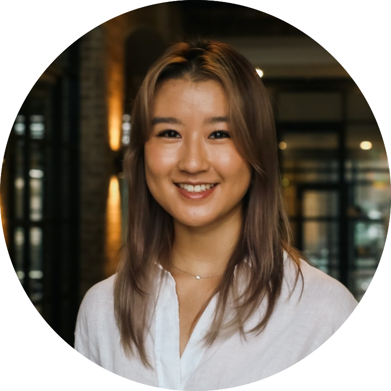

Born and raised in Sydney. Educated at University of Sydney.
Senior Account Manager at We Are Social. Studying to become a software engineer.
I've worked in a client service role for almost 4 years as an account/project manager within the social media agency industry. A couple years ago, I was looking to study part-time
to broaden my skill set, which led me to start a Graduate Diploma in Computing at University of Sydney. Since then, I've fallen in love with
coding and discovered the addictiveness of it.
To further build my coding skills, I applied for the SheCodes PLUS program, which takes a more practical approach and
would teach me web dev languages.
